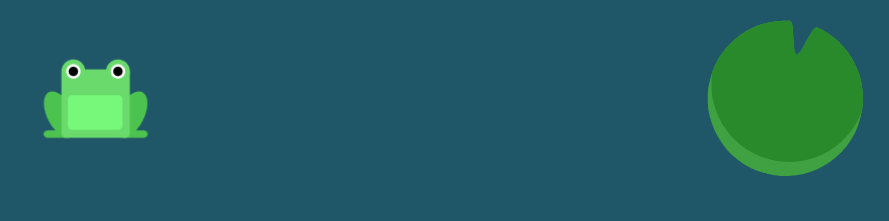
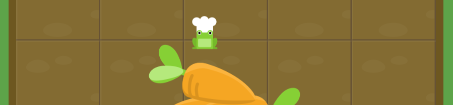

Notatki CSS
CSS = Cascading Style Sheets - Kaskadowe arkusze stylów
- CSS odpowiadają za prezentację
- CSS wpływają na wygląd elementów HTML na ekranie, wydrukach itp.
- Składnia CSS to reguły "{}"
- Pliki zawierające kod CSS mają rozszerzenie .css - jest jest możliwość korzystania z reguł CSS bez używania zewnętrznych plików
- <link href="style.css" rel="stylesheet" type="text/css"> - umieszczamy style za pomocą znacznika link
Budowa reguły CSS
selektor {
właściwość: wartość;
}
Podsumowanie CSS:
- Odpowiadają za prezentację treści strony
- Nie mają jednej wersji (rozwój modułów), potocznie mówi się, że aktualna wersja to 3
- Przeglądarki potrafią różnie interpretować CSS co prowadzi do tego, że...
- … pisanie stylów powoduje wiele frustracji u programistów (ale jest też niezłym wyzwaniem)
- Całą specyfikację znajdziesz na stronie w3c
CSS Dalej
- <znacznik style=”color:yellow;”>treść</znacznik> - Styl przy znaczniku z wykorzystaniem atrybutu style nazywamy stylem inline
- Prawdziwe selektory to: #id/.class/element
- . (kropka) - selektor klasy
- # (hash) - selektor id
- !important - wymusza wszystko w stylach - nie zalecany!
Specyficzność! - skala
- important! = 10000
- style="" = 1000
- #id = 100
- .class = 10
- element = 1
Jeśli specyficzność jest równa - pierwszeństwo ma selektor "bliżej" elementu
Maciek Korsan - "Rekomenduję dodawać klasy do wszystkich elementów i unikać zagnieżdżeń"
Nazewnictwo klas
- używaj pojedynczych słów z j. angielskiego
- nazywaj rzeczy zgodnie z ich funkcją na stronie
- startuj z małej litery np. header nie Header
- nie zaczynaj od cyfry
- jeśli musisz użyć dwóch słów użyj tzw. kebab case np. news-listing
- staraj się, żeby element miał jedną klasę (nie zwiększaj specyficzności bez potrzeby)
Podsumowanie lekcji nr 2
- html class="name" = css .name
- html id="name" = css #name
- stylujemy po klasach (bez zagnieżdżeń!)
- nazywamy klasy po angielsku zgodnie z przeznaczeniem
- tworzymy klasy nawet mamy jeden element danego typu
- specyficzność może dać popalić
- nie używamy !important i stylów inline'owych
Życie w pudełku: Display, wymiary i owerflow
- "Świat stron internetowych jest płaski" - prawie cały
- <div> - nie ma zanaczenia semantycznego, używamy go gdy chemy coś "opakować" (tylko kiedy nie istnieje odpowiedni symantyczny znacznik)
- display:block - elementy ustawiają się jeden pod drugim - zajmują całą powierzchnię(width) przy założeniu, że nie nadajemy wysokości i szerokości
- display:inline - elementy ostawiają się obok siebie i dostosowują się do treści- wysokość i szerokość są ignorowane
- display:linline-block - elementy posiadają właściwości blokowe czyli uwzględniają wysokość i szerokość natomiast ustawiają się obok siebie jak w linline
- width/height - szerokość/wysokość
- max-width/max-height - maksymalna szerokość elementu/maksymalna wysokość elementu - element się kurczy przy zmianie rozmiaru ekranu (gdy treść sie nie mieści to wystaje poza blok)
- min-width/min-height - minimalna szerokość/minimalna wysokość - elementy przestaną się kurczyć (gdy treść sie nie mieści to blok sie dostosowuje do treści)
- overflow: hidden - w momencie odstawania treści(elementy) zostają ukryte
- overflow: visible - w momencie odstawania treści(elementy) zostają bez zmian(w elemencie pojawia się scroll)
Życie w pudełku: Jednostki
- 0 - możemy zapisywać bez jednostek
- pixele - poodstawowa jednostka, zapisujemy je za pomocą skrótu __px
- procenty - zapisujemy je za pomocą skrótu __% - oddziaływuje względem rodzica
- vw = viewport width - szerokość dostosowuję się do szerokości naszego okna przeglądarki
- vh = viewport height - wysokość dostosowuję się do wysokości naszego okna przeglądarki
Życie w pudełku: Box model (padding/border/margin)
wszystkie elementy są "otoczone" niewidzialnym prostokątem
BOX MODEL
MARGIN
BORDER
PADDING
ELEMENT
Padding
- padding - wewnętrzny margines - odpowiada za to o ile oddalone mają byc elementy, które znajduja się w środku elementu, który ma padding
- Zapis pełny: padding-top: _px;/padding-right: _px;/padding-bottom: _px;/padding-left: _px;
- Zapis skrótowy(shorthand): padding: top _px right _px bottom _px left _px;
- Wartość lustrzana: padding: top+bottom _px right+left _px;
Border
- border - jest to linia wewnętrzna elementu
- Zapis pełny: border-width: _px;/border-style: solid;/border-color: color;
- Zapis skrótowy(shorthand): border: _px solid color;
Border-style
- none - Brak obramowania, ustawia szerokość na 0. Jest to domyślna wartość.
- hidden - Tak samo jako 'none', oprócz konfliktu rozdzielczości obramowania dla elementów tabeli.
- dashed - Serie kresek lub fragmentów linii.
- dotted - Serie kropek.
- double - Dwie proste linie, które dają w sumie liczbę pikseli zdefiniowaną jako border-width.
- groove - Efekt wyrzeźbienia.
- inset - Sprawia wrażenie, że blok jest zapadnięty.
- outset - Przeciwieństwo 'inset'. Sprawia, że blok wydaje się trójwymiarowy (wysunięty).
- ridge - Przeciwieństwo 'groove'. Obramowanie wydaje się trójwymiarowe (zapowiadane).
- solid - Pojedyncza, prosta, ciągła linia.
Border radius
- border-radius - funkja odpowiadająca za zaokrąglanie rantów w elementach
Margin
- margin - zapisujemy tak samo jak padding
- Określa jak daleko możemy oddalić się od innych elementów
- Marginesy nie sumują się
- Opcja auto działa w momencie gdy element ma nadaną właściwość width
Box-sizing
- box-sizing - Wpływa na wielkość naszego elementu. Element zachowuje oryginalą wartość nadaną przez użytkownika
- box-sizing: border-box - od border utrzymują się proporcje (dostosowuję się padding oraz element)
Position
Właściwość position pozwala nam na pozycjonowanie naszych elementów w przestrzeni roboczej.
- position: static - domyśla własność
- position: relative - elementy mające własność absolute będą wzgledem tego elementu pozycjonowane. Możemy teraz używać opcji top, right, bottom i left
- position: absolute - pozycjonowane względem body lub elementu posiadajacego własność relative
- top/right/bottom/left - Właściwości pozwalajace na pozycjonowanie elementu względem swojej startowej pozycji
- z-index - ustalamy kolejność warstw
- position: fixed - nadana własność przejmuje cechy absolute lecz jest przytwierdzona do głownej strony. Dobra opcja na nagłówki. Jak własności inline resetuje się width
- position: sticky - element z tą własnością przykleja się do rodzica przy użyciu opcji top (by działało rodzic elementu nie może mieć opcji overflow)
Życie w pudełku: Float
- Layout (interfejs strony internetowej) - element konstrukcji graficznej, w którym ustala się wygląd (kolorystykę, elementy dekoracyjne, krój czcionki) i rozmieszczenie elementów (treści) na stronie. W fazie projektowej może mieć postać pliku graficznego prezentującego zakładany styl. Layout może zostać wykonany w różnych technologiach (np. SWF, HTML, CSS). Modyfikacja layoutu strony nie implikuje ingerencji w jej treść.
- FLOAT - nie służy do budowania layautów. Służy do opływania elementów
- clear - opcja clear czyści właściwość flaot.Więcej o clear
Klan
- Klan - jest to rodzina. DOM porównujemy do rodziny elementów
- Węzeł /node - pojedyńczy element drzewa
- Inherit = dziedziczenie - jeśli element jest jawnie zdefiniowany to przejmuje style. Dodajac wartość: inherit; wymuszamy na dzieniczeniu wartości od rodzica.
CSS dalej
- list-style-type: circle; - do listy dodajemy kropki
- list-style-type: square; - do listy dodajemy kwadraty
- list-style-type: upper-roman; - do listy dodajemy liczby rzymskie
- list-style-type: lower-alpha; - do listy dodajemy znaki abcd
Flexbox czyli trening z Flexbox Froggy
CSS:Grid czyli trening z Grid Garden
- gird-template-columns - wyznaczamy ilość kolumn (wartości zapisujemy po spacji np. 200px 40px)
- gird-template-rows - wyznaczamy ilość wierszy (wartości zapisujemy po spacji np. 20% 20% 20% 20%)
- gird-template - używając znaku "/" możemy zapisać dwie wartości na raz column/row
- order - domyślnie, wszystkie elementy grid mają wartość order ustawioną na 0, ale może to zostać ustawione na dowolną liczbę dodatnią lub ujemną, podobnie do atrybutu z-index.
- column-gap - wyznacza odstęp pomiędzy kolumnami
- row-gap - wyznacza odstęp pomiędzy wierszami
- repeat - umożliwia powtórzenie ilości kolumn/wierszy (np. grid-template-columns: reperat(5, 20%)
- fr - jednostka ułamkowa
- "." - kropka oznacza pustą przestrzeń
- grid-column-start/grid-column-end/grid-column - definiuje położenie elementu w kolumnie
- grid-row-start/grid-row-end/grid-row - definiuje położenie elementu w wierszu
- grid-area - akceptuje cztery wartości rozdzielone przez ukośnik: grid-row-start, grid-column-start, grid-row-end oraz grid-column-end.
- span - Zamiast definiować element na podstawie początkowej i końcowej linii, możesz go zdefiniować na podstawie pożądanej szerokości z użyciem słowa kluczowego span
- gird-template-areas - header header
article article
footer footer - minmax - (minWartość, maxWartość)
CSS:Grid - przykład
HEADER
ARTICLE
Pseudoelementy oraz Pseudoklasy
- Pseudoelementy "::" - możemy wpływać na strukturę strony. Nie jest on elementem DOMu. Używamy je najczęściej do dekoracji elementów na stronie. Możemy używac pojedynczego ":" lecz jest to nieaktualne praktyka.
- ::before - pseudoelement tworzy się na początku
- ::after - pseudoelement tworzy się na końcu
- content:"" - dodajemy tekst w css
- Pseudoklasy ":" - modyfikator elementu gdzie jego działanie wynika z innego działania
- :hover - po najechaniu myszką na element modyfikujemy jego właściwości
- :visited -wprowadza zmiany po odwiedzeniu linku
- :focus - wyróżnia zaznaczone rzeczy
- :first-child/last-child/nth-child - wyróżnia konkretne elementy
- :not - zaprzeczenie